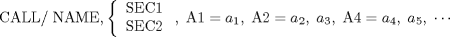

| 12.3. Use of Special Program | ||
|---|---|---|
 | Chapter 12. Special Programs in APT -- CALL |  |
| 12.3. Use of Special Program | ||
|---|---|---|
| | Chapter 12. Special Programs in APT -- CALL | |
The CALL statements described in Section 12.1 and Section 12.2 cannot be mixed: that is, a part programmer for any one CALL is not allowed to specify one part of the parameters by value and another part by name and value. For example:
This type of statement is not allowed.

If a part programmer specifies SEC1, and APT processor assumes that the special program is available in the APT library of programs and that the special program is to be executed immediately in the compiler phase of the APT processor. Similarly, if the programmer specifies SEC2, the APT processor in the compiler phase decodes the information for processing in the arithmetic element phase of the APT processor.
The parameter names, NAME1, NAME2, etc., are programmer-assigned symbols and must not be APT vocabulary words.
| |  | |
| 12.2. Call by Parameter Name and Value |  | Chapter 13. Cutter Path Transformation Statements |